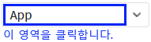
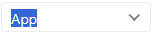
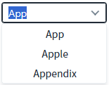

AutoComplete의 'hideListOnFocus' 속성을 사용하여 편집 모드로 전환될 때 목록의 표시 여부를 설정한 예제입니다. 이 속성의 기본 동작은 편집 모드에서 입력 필드에 키가 입력되면 목록이 표시됩니다. 표시되는 목록은 입력된 값으로 필터가 적용된 항목입니다.
편집 모드 진입 시 목록 표시하지 않기
편집 모드 진입 시 목록 표시하기
1
STEP 1: 편집 모드로 변경합니다.
예제 영역 '목록 미표시'에구성된 예제를 확인합니다.'AutoComplete'의 오른쪽에 구성된 버튼을 제외한 영역을 클릭합니다. 버튼을 클릭하면 목록이 표시됩니다.
Image 1.브라우저(Chrome) 실행 예시

2
STEP 2: 실행 결과를 확인합니다.
편집 모드로 전환되며, 목록이 표시되지 않습니다.
Image 2.브라우저(Chrome) 실행 예시

1
STEP 1: 편집 모드로 변경합니다.
예제 영역 '(기본 설정) 목록 표시'에구성된 예제를 확인합니다.'AutoComplete'의 오른쪽에 구성된 버튼을 제외한 영역을 클릭합니다. 버튼을 클릭하면 목록이 표시됩니다.
Image 3.브라우저(Chrome) 실행 예시
2
STEP 2: 실행 결과를 확인합니다.
편집 모드로 전환되며, 입력 필드에 입력된 값으로 필터되어 목록이 표시됩니다.
Image 4.브라우저(Chrome) 실행 예시

1
속성을 정의합니다.
[필수] hideListOnFocus
편집 모드 진입 시 목록 표시 여부를 지정합니다.
제시된 옵션으로 설정합니다.
(옵션 설명)
- "false" : [default] 입력 필드의 값과 매칭되는 목록이 표시됩니다.
- "true" : 목록이 표시되지 않습니다.
hideListOnFocus